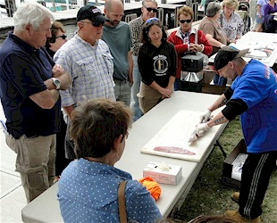

Getting the fish to the pan
A swelling toad is fun to hold!
Dock Day on the Bay
A New Maritime Heritage Event
Admission: Free
Saturday, September 26, 2015
12 Noon - 4:00 PM
Somers Cove Marina
A waterfront festival celebrating the history, heritage and fishing culture of the Chesapeake Bay. Highlights include in-water boats, great food and live music.
- Commercial and sport fishing boats
- Historic fishing vessels
- Seafood cooking demonstrations
- Fish cleaning demonstrations
- Fishing gear displays
- Maritime related arts and crafts
- Children's activities
- Safety at sea
- Live fish
- Local seafood restaurant sales
- and a Blessing of the Fleet ceremony
Dock Day on the Bay is the first fishing heritage event of its kind in this part of the Bay. It is a great opportunity for families to meet fishermen along the waterfront. There is no better community to host the festival than Crisfield, one of the Bay's last genuine working waterfront towns. Bring the family and your appetite. We'll see you on the Docks!
For more information about Dock Day on the Bay visit the Crisfield Heritage Foundation.